|
Ritorna all'indice delle parrocchie
Il numero abbinato ad ogni famiglia indica la relativa posizione nello Stato delle Anime
1 - Giovanni Fondi - Paroco
2 - Bernini Giuseppe - mezzaiolo di alcune terre e va a opera sopra i terreni
3 - Nastasi Marco - proprietario di terreni e vetturale padrone delle bestie - 13
4 - Nastasi Andrea - proprietario di alcuni terreni e lavoratore di terreni - 16
5 - Bianchi Domenico - fa il mezzaiolo
6 - Finetti Maddalena - vedova - pigionale - 3
7 - Carli Giuseppe - pigionale attende a fare il carbone e va a opera - 2
8 - Fusi Santi - pigionale attende al terreno e va a opera
9 - Favilli Agostino - mezzaiolo attende a lavorare il podere
10 - Fantozzi Giovanni Battista - mezzaiolo attende a lavorare il podere
11 - Mecacci Francesco - mezzaiolo attende a lavorare il podere
12 - Fantozzi Domenica - vedova - fattoressa
13 - Santucci Agostino - mezzaiolo attende a lavorare il podere - 14
14 - Grassi Brigida - vedova - pigionale fila e va a accattare
15 - Colonnesi Andrea - proprietario di alcuni terreni attende a lavoratore il terreno
16 - Semplici Gaetano - pigionale fa a mezzaria alcune terre e va a opera sopra il terreno - 4
Comunità della Selva a Cerreto
1 - Marrocchi Alessandra - vedova - fattoressa
2 - Baldi Giovanni Battista - mezzaiolo attende a lavorare il podere
3 - Gori Giovanni - mezzaiolo attende a lavorare il podere - 11
4 - Bianciardi Michel Angelo - mezzaiolo attende a lavorare il podere
Comunità di Monte Capraia
1 - Frullani Giuseppe - fattore
2 - Minocci Giovanni Battista - mezzaiolo attende al podere
3 - Ricci Giuseppe - fittuario di mulino attende al mulino - 5
4 - Nabissi Giuseppe - mezzaiolo privo di luce - 17
5 - Bimbi Domenico - attende al podere
6 - Baglioni Vincenzio - pigionale va a opera sopra i terreni - 5
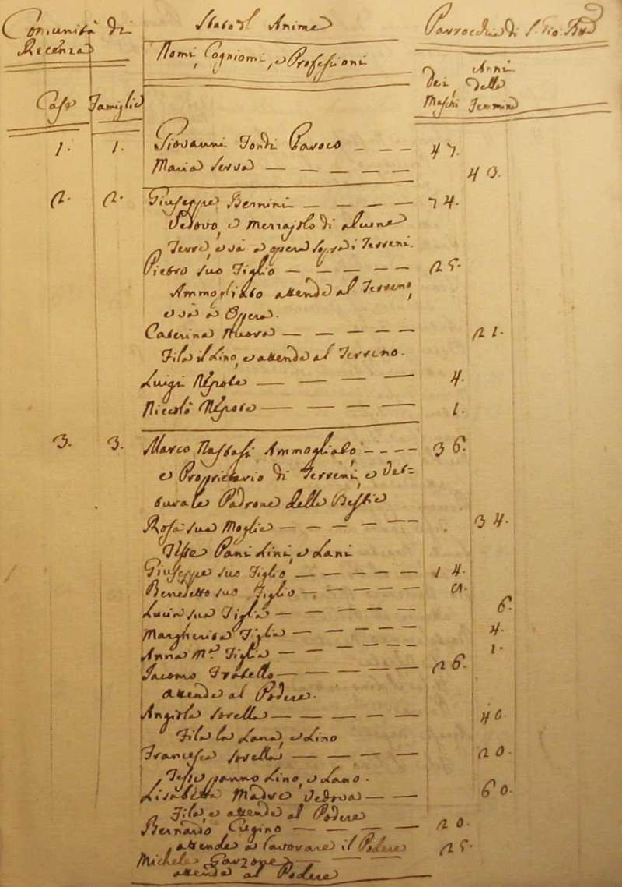
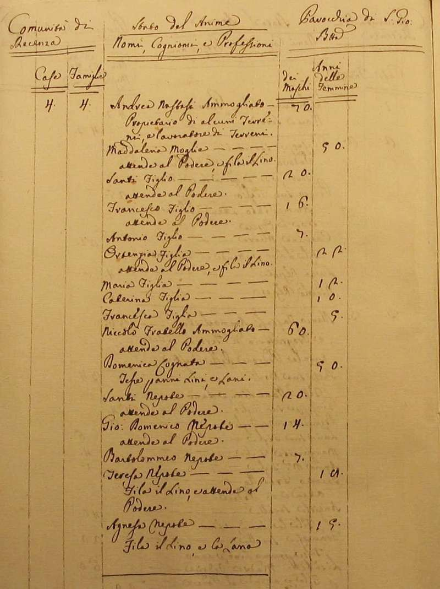
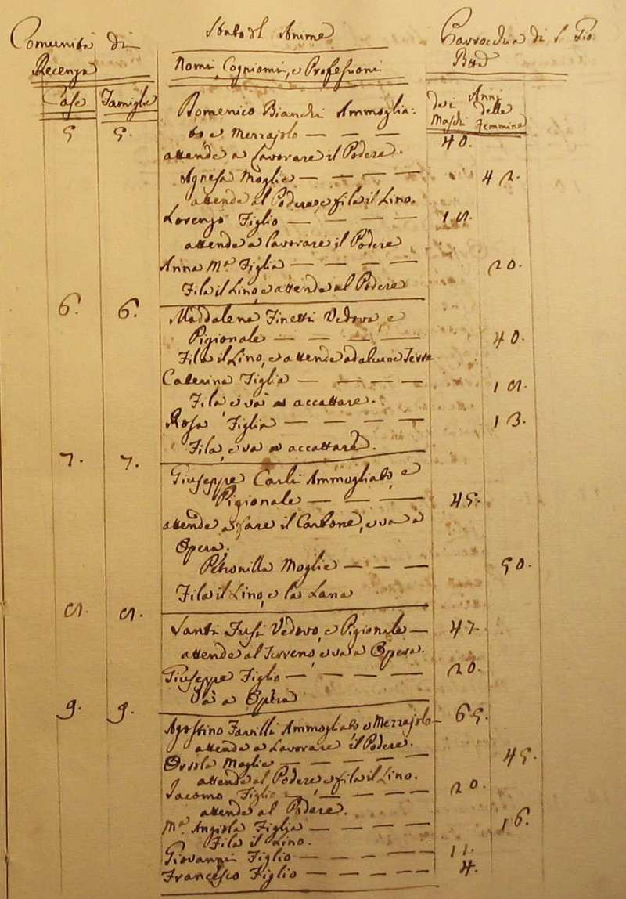
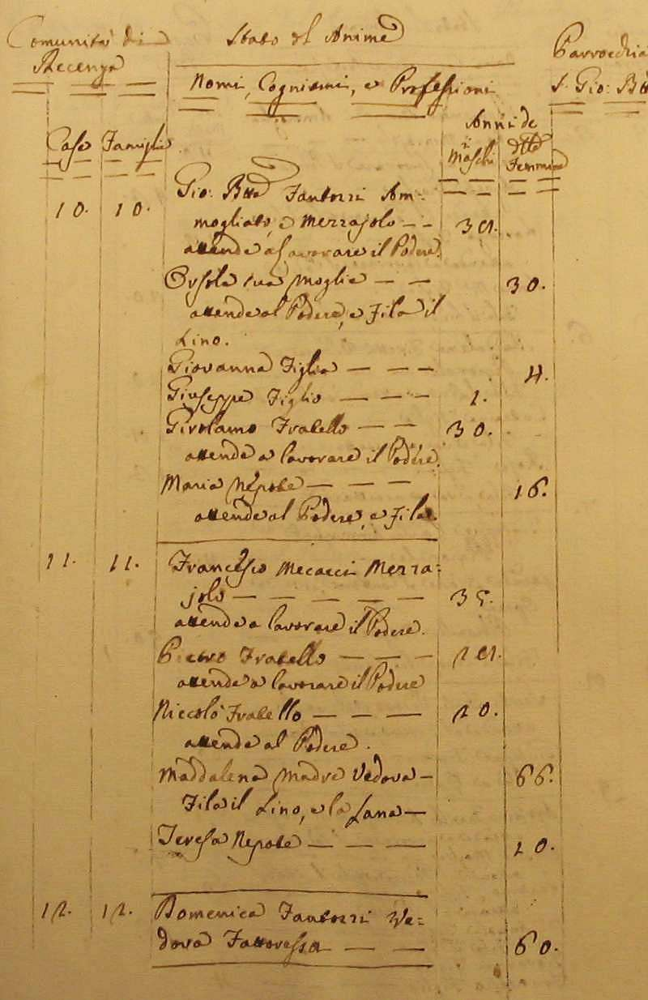
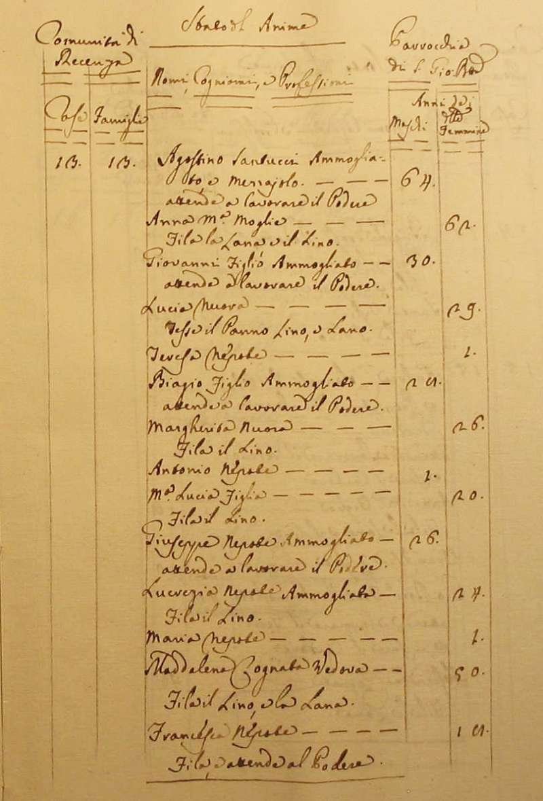
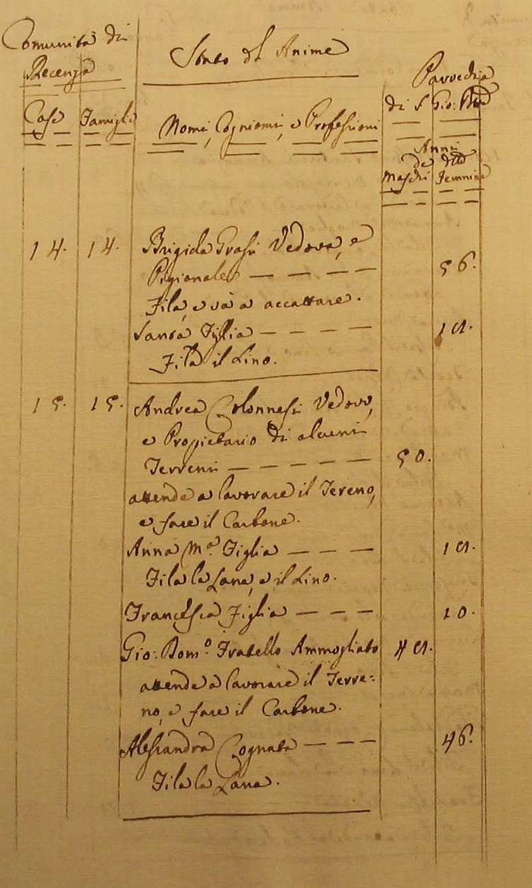
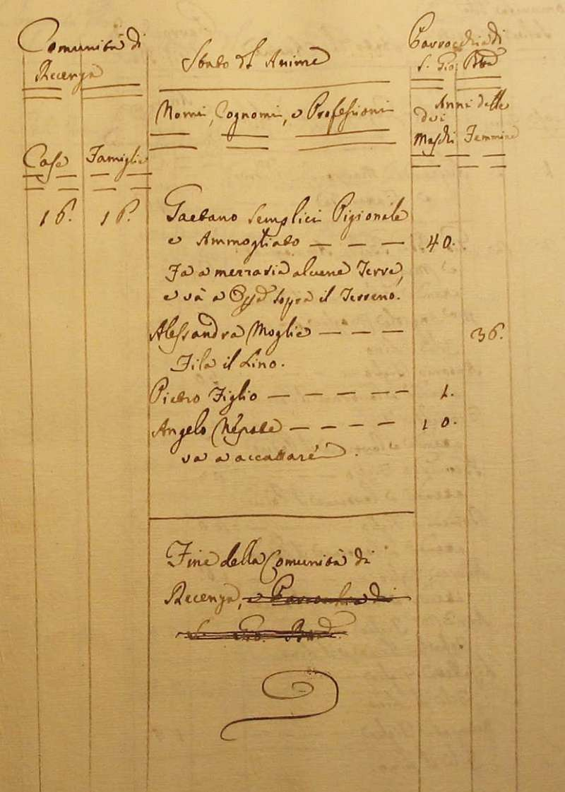
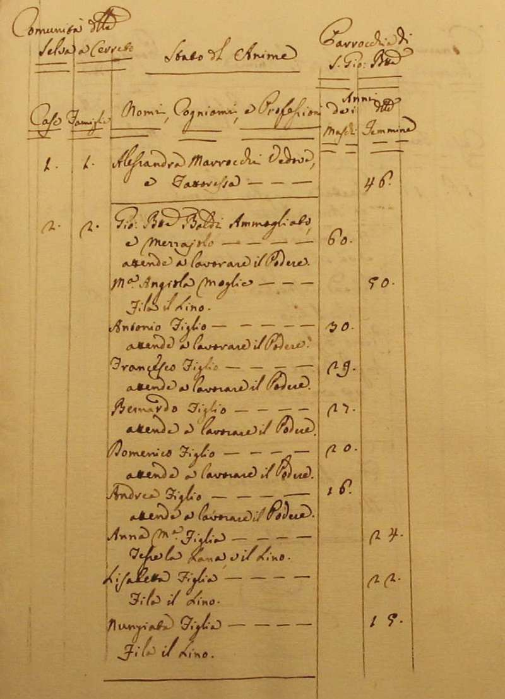
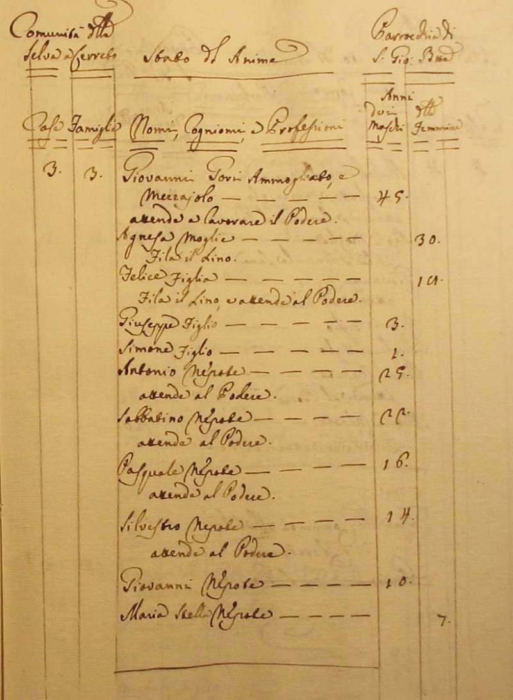
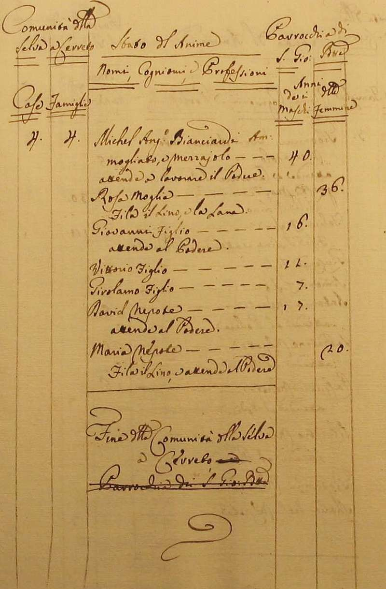
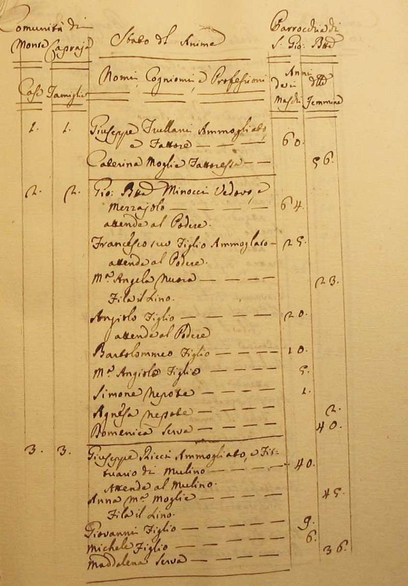
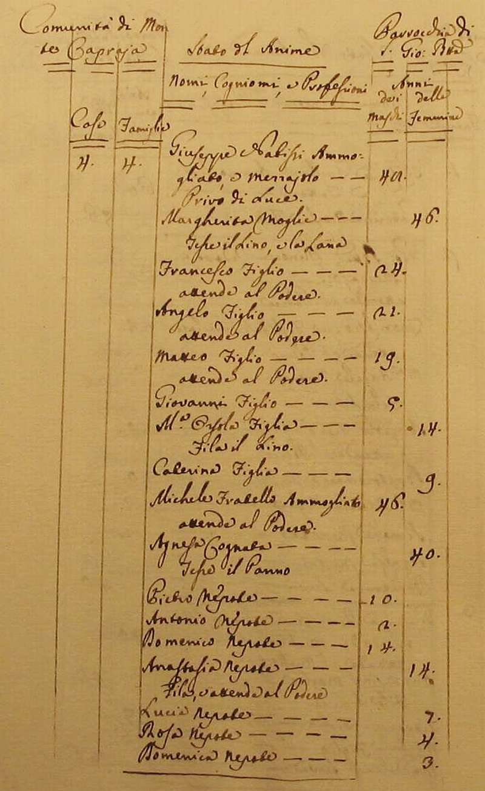
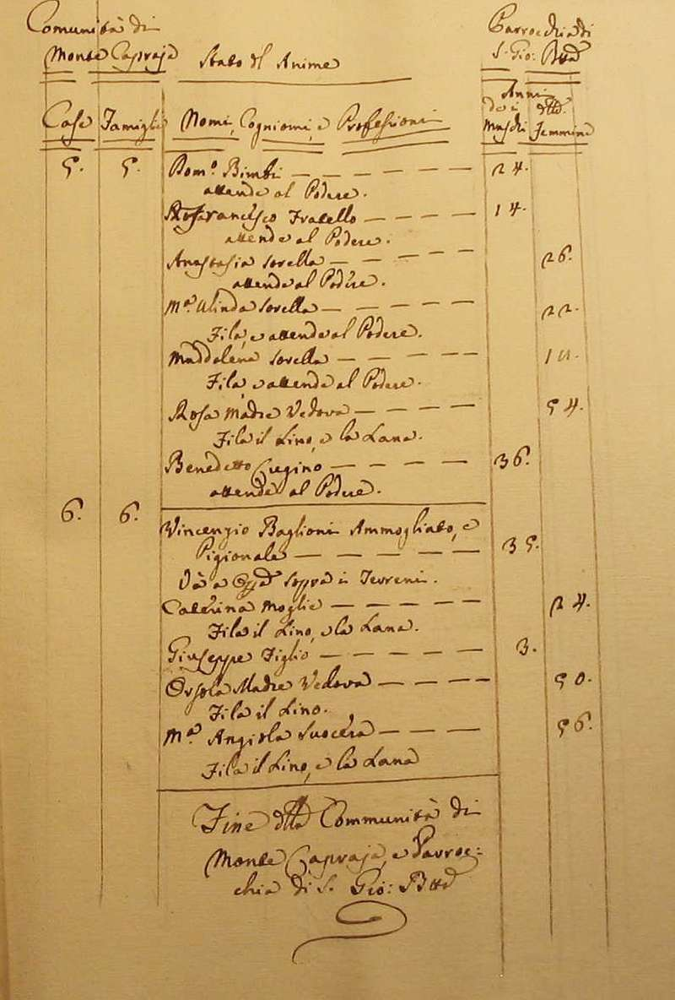
Torna ad inizio pagina
Ritorna all'indice delle parrocchie
| |

|